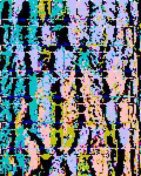
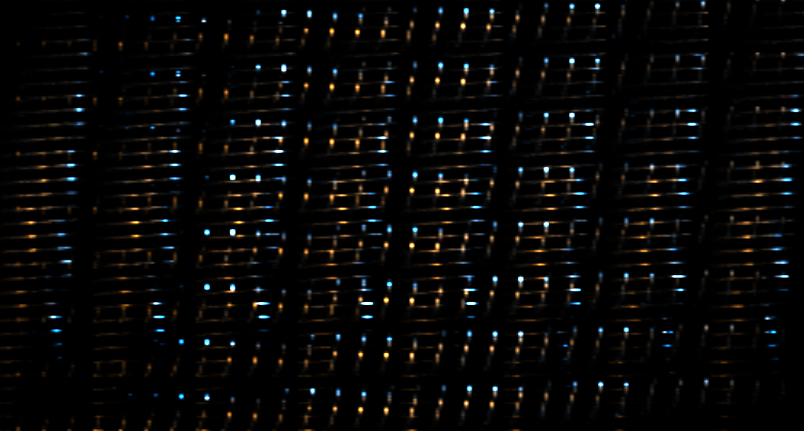

PERCEPTIONS, is that all?
“The Seen & The Unseen” podcast
but what about the metadata ?
hmm not for physical things. there are things we choose to see/not see (?)
no, there is hidden information.
There’s always more than surface perception...
Perception is individual, based on past experiences

Read full article: Making Poetry in Piet
INNER STRUCTURE OF DATA
I think about different ‘messages’ in different mediums what changes/what stays the same e.g. translating across languages, now translating between text/image/sound via code... what structures this message so that it can remain similar between translations? idk!
keys, values, bits
some schema

headers
man-made stuff

states: either particles or waves probabilities, odds with degrees of noise based on uncertainty. It’s temporal-spatial (particularly for quantum) to us, perception may be all. But not in the absolute ques in my mind: are we a perception :)
I love the frequencies part of the first session, so i assume most data, specifically in music and files, can be represented as waves.
STATES OF DIGITAL MATTER
corrupted
“current”, we only really keep the current state. How we got there is lost.
obsolescence
degradation
undreadable
undecodable
bit rot/data rot
low/high-resolution
Versioning
open and closed
off and on
zipped
compressed
superposition -> existing both as one thing and something else : schrodinger<3